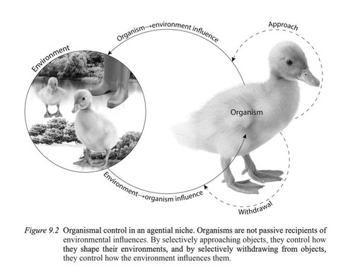

Theory
This page is under construction. This page is under construction. My aim for this page is to host a series of non-academic essays on the theoretical perspectives of developmental systems thinkers, developmental psychobiologists, bioenactivists, and dialectical biologists. In particular, I want to showcase how these perspectives may change the way we study the ontogeny and evolution of animal behavior. For now, I am posting a series of books that serve as an introduction to these perspectives. For a preview, see my substack page, gregory.kohn.substack.com
Books
Aronson, L. R., Tobach, E., Rosenblatt, J. S., & Lehrman, D. S. (1972). Selected writings of T. C. Schneirla. W.H. Freeman & Co.
Avital, E., & Jablonka, E. (2000). Animal traditions: Behavioural inheritance in evolution. Cambridge University Press.
Atz, J. W., Aronson, L. R., Tobach, E., Lehrman, D. S., & Rosenblatt, J. S. (1970). Development and evolution of behavior: Essays in memory of TC Schneirla.
Bateson, Patrick & Martin, P. (2000). Design for a life: How behavior and personality develop.
Bertalanffy, L. V., & Woodger, J. H. (1938). Modern Theories of Development.
Blumberg, M. S. (2005). Basic instinct: The genesis of behavior. Thunder’s Mouth Press.
Bolhuis, J. J., & Hogan, J. A. (1999). The development of animal behavior: A reader. Oxford, England: Blackwell.
Gottlieb, G. (2001). Individual development and evolution: The genesis of novel behavior. Psychology Press.
Gottlieb, G. (1997). Synthesizing nature-nurture: Prenatal roots of instinctive behavior. Psychology press.
Gottlieb, G. (1971). Development of species identification in birds.
Khayutin, S.N. & Dmitrieva, L.P (1981). Organization of natural behavior in nestlings. Moscow: Nauka. (in Russian).
Kuo, Z. Y. (1976). The dynamics of behavior development: an epigenetic view. Plenum.
Lewkowicz, D. J., Lickliter, R., & Lickliter, R. (Eds.). (2002). Conceptions of development: Lessons from the laboratory. Psychology Press.
Moore, D. S. (2015). The developing genome: An introduction to behavioral epigenetics. Oxford University Press.
Oyama, S. (2000). The ontogeny of information. Duke university press.
Oyama, S., Griffiths, P. E., & Gray, R. D. (Eds.). (2001). Cycles of contingency: Developmental systems and evolution. Mit Press.
Shenk, D. (2011). The genius in all of us: New insights into genetics, talent, and IQ. Anchor.
Walsh, D. M. (2015). Organisms, agency, and evolution. Cambridge University Press.
